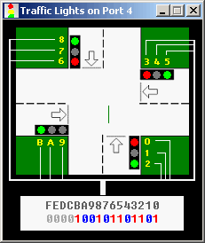
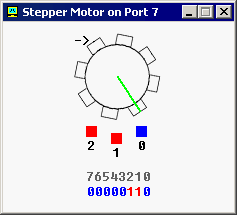
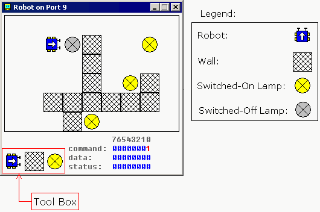

; directive to create BIN file:
#make_bin#
#CS=500#
#DS=500#
#SS=500#
#SP=FFFF#
#IP=0#
; skip the data table:
JMP start
table DW 100001100001b
DW 110011110011b
DW 001100001100b
DW 011110011110b
start:
MOV SI, 0
; set loop counter to number
; of elements in table:
MOV CX, 4
next_value:
; get value from table:
MOV AX, table[SI]
; set value to I/O port
; of traffic lights:
OUT 4, AX
; next word:
ADD SI, 2
CALL PAUSE
LOOP next_value
; start from over from
; the first value
JMP start
; ==========================
PAUSE PROC
; store registers:
PUSH CX
PUSH DX
PUSH AX
; set interval (1 million
; microseconds - 1 second):
MOV CX, 0Fh
MOV DX, 4240h
MOV AH, 86h
INT 15h
; restore registers:
POP AX
POP DX
POP CX
RET
PAUSE ENDP
; ==========================
|

